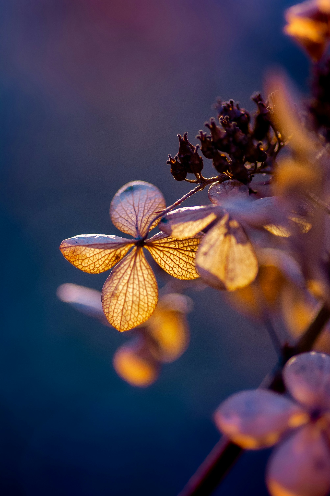
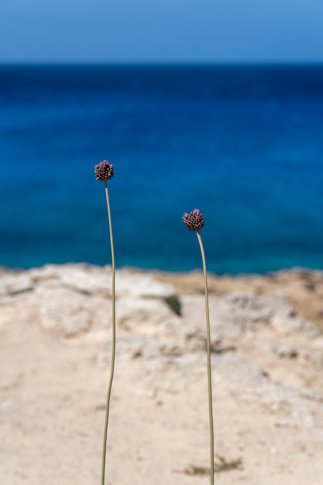
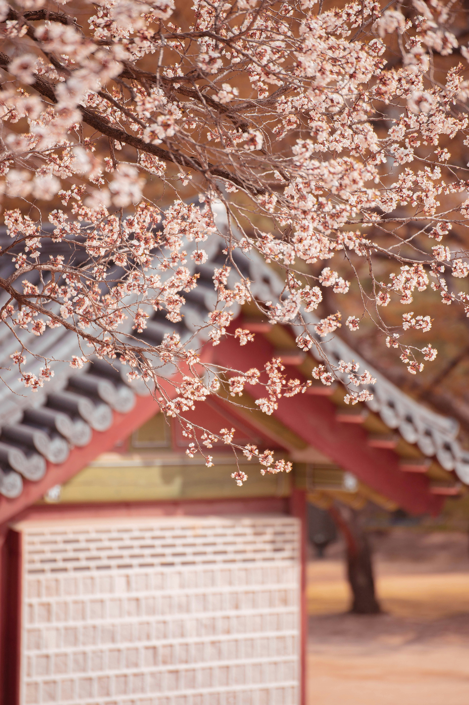
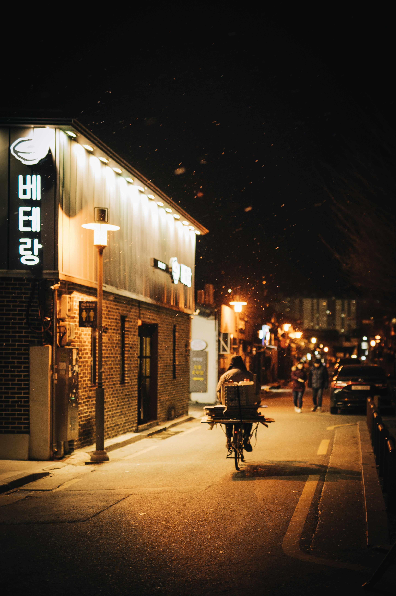
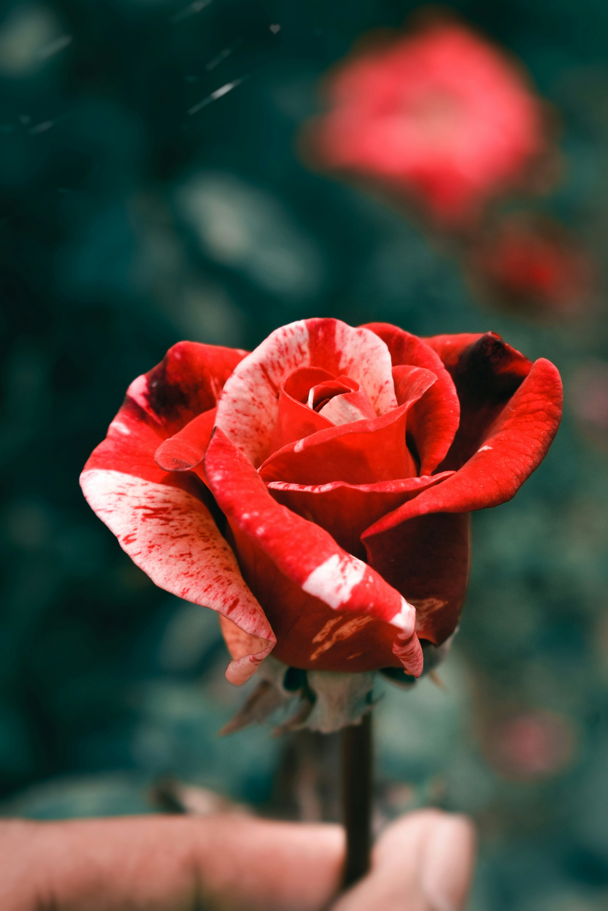

s.e.a. of sepulchers

i. part one
Sepulchers are
The most fascinating thing.
Ornately draping over
The rims of death –
As if it were a spectacle.
ii. part two
Several sepulchers
While traversing the fringes of life –
One was my confidants –
A contingent that seemed like
It would last forever, at the time –
Yet, I couldn’t be more wrong.
iii. part three
Humans are so complex to understand –
Sometimes, I wonder if I am but
An entity masquerading as one –
For that is how detached we are.
I cannot tell if I am at the forefront,
Handling the reins of catalysis
Or, if the soles of my feet tread
The weathering promenade –
As my irises espy the jingled spurs
In the distance of the expansive vista.
(every)thing hurts

i. every
Every time yellowed & orange foliage embraces the earthen vista –
Every time the Earth masquerades in a cloak of frigid white –
Every time the camellia blooms –
Every time the June bugs’ plaintive cries reverberate –
Every time that first snow graces the Earth,
I think of everything that happened –
And everything that didn’t.
ii. thing
I once knew of a thing called Love – it rebuffed me.
Joy was another queer fellow – it avoided me after I hit the third grade.
Peace was a strange little thing – to seek for something that doesn’t exist.
A catch-22 of emotions.
To all the things I never knew.
iii. hurts.
Every time a toddler scrapes their knee in the skirmish of fun and clumsiness –
And cries that “It hurts” –
I often wonder what they mean.
Because whenever the rivulets of sanguine rush through my own appendages,
The child of Sadness and Anxiety –
It doesn’t hurt –
Not nearly as much as when the soles of your boots turned away from me –
Forevermore.
To All My Bandages

i. grass
It started with grass –
Perfectly trimmed
In the unruly fringes of nature –
A natural dichotomy.
As the soles of my shoes
Embraced the asphalt
Promenade of elementary schoolgoers,
The grass – with its perfectly
Dome-shaped morning dew –
Seemed perfect –
As if nature could be naturally
Perfect –
As if I could be perfect.
ii. schoolbus
On the serpentine paths
That the bus took to school,
My close confidants and I
Would frolic in the threshold
Of reality and dreams –
The words dripping from the
Corners of our mouths –
Messengers of (in)tangible
Dreams and whimsical sketches
Of an alternate reality
In which we were animals –
Coexisting in an idyllic state,
Possessing not even an iota of a qualm
Because in that world,
Nothing made sense (conventionally).
And that rang bells of familiarity
That I thought were long cracked & broken.
iii. band-aids
In cybersecurity class –
Which is a fancy name for
Learning how to make safe passwords –
My keratin falls like the drooping petals
Of withered flowers – except, the vase is
The cold countertop of computers.
I hear myself asking to go to the nurse clinic –
I end up having to wait until school’s over
For me to be allowed to go.
By then, my fingertips look like
They’ve been the centerpiece of an art piece
Where love, blood, and hate are the focus –
Red, disproportionately –
Yet, red all the same.
My fingers end up wearing sheer gauze
For their Halloween festival –
Except, it’s not October, and
The only thing that’s dead is
My thoughts – masquerading under
The cloak of vigorousness
While being as lifeless as a wallflower
Intrinsically.
iv. bandages
When I was in elementary school,
The letters associated with
Bandage and band-aid lingered in
An ambiguous realm –
They seemed one and the same.
Now, almost a decade later,
Those two letters that set them apart
Make a world of difference.
To me,
A bandage is one that
Binds the wounds that other people
Can’t see. A band-aid can
Cover up the sanguine sickness
Engulfing my fingertips,
Yet, a bandage can’t do that –
It can only cover
My emotional scars – that only
I can see.
So, a bandage may not be
The most effective
Coping mechanism.
With age, I realize
That I need bandages more.
Yet, I’ll always need
The aid of bandaids to seal up
The scars that nobody
Else wants to see.
iv. band-aids
In third grade, I asked
For a band-aid.
I got it, neatly encased
Like little Christmas presents
But for fingers. Luckily,
I had both the green and
Red spirit to celebrate in (un)joy.
Red on my fingers
And green on my face.
v. ruminations
Every time my feet
Traverse across
The confined sphere of
My house and
I venture into the world
Of friendship,
I always get reminded of
My band-aids, and
How nobody else has them.
Already twice in a few
Weeks, a contingent of girls
Informed me that
My bandage was littering the
Hard bathroom floor.
My fingertips embraced the
Band-aids – a testament
To my resilience thus far –
And I made a band-aid
Cemetery outside – my
Open scars for
All the world to see –
Except, I put no
Obituary. The vestiges of
My tumultuous psyche
Litter the earthen vista
Like stars litter
The desolate sky with
That little thing
Called light. I could use
Some of that
In my life.
(sol)itude

i. sol
In spanish class,
Our teacher told us
That sol meant sun.
It rings bells of
Familiarity – it sounds like soul.
It seems too sunny a word
To be included in solitude.
I’m rather disappointed –
That the friends whom I trusted the
Most – act as if I were
A phantom of sound – unheard and invisible.
I feel my heart turning purple
Whenever the soles of their shoes
Turn towards me, in my direction.
With saccharine smiles,
They walk towards my direction
To siphon off the fruit of my labors
For petty words of
Feigned friendship.
ii. sola
In Spanish, sola is the word
For alone, in the feminine conjugation –
In a sea brimming with people,
I have never felt so alone
Marooning myself on an island –
It’s rather petty to think
That I could ever rebel –
For the words bubbling
Just underneath the surface of my tongue
To render themselves heard.
That them being a parasite,
Only makes me feel smaller
Than I already feel.
fri(ends)

i. sol
In spanish class,
Our teacher told us
That sol meant sun.
It rings bells of
Familiarity – it sounds like soul.
It seems too sunny a word
To be included in solitude.
I’m rather disappointed –
That the friends whom I trusted the
Most – act as if I were
A phantom of sound – unheard and invisible.
I feel my heart turning purple
Whenever the soles of their shoes
Turn towards me, in my direction.
With saccharine smiles,
They walk towards my direction
To siphon off the fruit of my labors
For petty words of
Feigned friendship.
ii. sola
In Spanish, sola is the word
For alone, in the feminine conjugation –
In a sea brimming with people,
I have never felt so alone
Marooning myself on an island –
It’s rather petty to think
That I could ever rebel –
For the words bubbling
Just underneath the surface of my tongue
To render themselves heard.
That them being a parasite,
Only makes me feel smaller
Than I already feel.
microcosm
i. loomings
A saccharinely sweet smile
Escapes from the corners
Of her mouth as she talks
But the sound is inaudible to me.
In the realm of South Georgia heat,
I am inundated with
An intoxicating scent that is redolent
Of cheap perfume.
Everything eludes me,
Yet my irises are reticent
And omniscient.
ii. inklings
It’s a strange feeling –
To have been
Ostracized on an island
Of solitude
For so long –
Never realizing
That the iron bars
That confines me
From within are not
Forged from
The abysmal depths of my soul
But by the hand of society –
Who melts and re-forges the bars
At will –
Shattering the bars only when
They need use of me.
Even without the iron bars,
My soul feels trapped.
For I am not truly free.
in a tumult

i. na(scent)
I’m in my electives class
When my senses went blank.
My cheeks were flushed –
Like the cherries, I ate alone at lunch.
My temples were throbbing –
Like a seismic earthquake had
Struck the realm of my mind into
Feigned consciousness.
I wish I were a figment of
Someone else’s imagination –
Because, then, I wouldn’t have the
Dilemma of facing
My worst enemy: myself.
ii. re(creation)
Recreation is such
An amusing word –
As if it were as whimsical
As maker space –
When, in actuality,
It’s where saltwater
Stemms from my sebaceous pores,
And not from my lacrimony glands.
My heart flushes,
Not from the natural carmine
Of the adrenaline rush after exercise –
But because an ocean of salt
Is running in rivulets through my shirt,
Clearly visible.
At least, in this way,
The brackish ocean is visible
In some way, albeit unconventional.
My issue is, why isn’t there a
Counterpart of sebum as my irises –
I could use those scrutinizing
Glances – not when red colors my
Social consciousness –
But when I actually need it.
Ode to O.C.D.

i. o.b.s.e.s.s(ion).
(o)cciptal lobes deceive me.
I thought I heard incorrectly, (but I didn’t.)
Why else would I hear the words
Jumbled together incoherently
A disservice to the eloquence
Of my inner monologue.
(b)ecause, in the tapestry of words
They are strewn together in my mind’s recesses.
Yet, my brusque tongue cleaves them.
(s)o my formative school years were filled with
Knells of low self-esteem.
I was afraid –
To do what every human is meant to do,
As social creatures.
I was afraid to talk.
(e)very year I went about in a cloak –
Obscuring my thoughts, my senses, my everything.
I suffocated my thoughts,
Pressing them underneath the surface of speech.
Just as my teeth incessantly gnawed
Bits of skin.
A sort of metamorphosis, like a butterfly.
Except, unlike a butterfly,
I only plunged into an even more abysmal
Pit of despair.
Except, I saw myself, marauded of skin –
Physically & internally.
Everything felt raw and numb.
Yet, the pain I felt, on the intangible inside
Surpassed that of my epidermis breaking –
Leaving a residue of raw, sanguine skin.
Everything hurt.
(s)anguine was my life.
Not sanguine as in happy.
The other kind.
What other kind is there,
For someone like me…
Who, despite seventeen years on this Earth
Knows nothing of how to talk like everyone else.
Has a dam instead of the flowing river of words
That everyone else seems to have.
(s)ordid was I.
Being denuded of what made me human.
I lived as a mute.
For several years.
Until Society jostled me –
Telling my (un)self to exist again.
I can’t bring the dead to life.
ii. c.o.m.p.u.l.s.i.v.e.
(c)onfused were my thoughts
(o)rder merged into a hazy threshold of disorder
(m)eticulous were my exactly 35 steps to and back from my desk
(p)utrid were the phantoms of speech that lingered over me –
(u)biquitous speech was akin to a white whale in Moby Dick.
(l)ucid were my thoughts – unarticulated.
(s)ound was an illusion – my external & internal voice were nothing alike.
(i)diosyncrasies seem unreal – if I could be like everyone else, I would.
(v)ile is the fiend that befells me – she who whispers (un)truths
(e)ffervescent was who I used to be, shrouded under the masquerade of o.c.d.
iii. (dis)o.r.d.e.r.
(o)rdained or controlled?
(r)endered speechless?
(d)ilapidated mind?
(e)bullience of thought?
(r)ather unkempt speech?
Was disorder another one of a social construct?
Or it is entropy,
Objectively grounded in truth.
An Ode to P.B.A.

[Context: Pseudobulbar affect (PBA), also known as emotional incontinence, is a neurological disorder that causes people to have sudden, uncontrollable, and inappropriate episodes of crying or laughing. These episodes can be out of context with the person's social interactions and may not match their emotional state.]
i. step one: emotional (in)continence
My heart has always been purple.
Not red, like everyone else I had known.
Purple –
From emotionally bruising itself.
For in the realm of emotions,
I lack any semblance of volition.
Tears and laughter come at the whim –
Of my cerebrum.
I used to think that this meant my emotions
Were rational.
Yet, is it rational when
A classroom full of irises
Meet mine when sanguinity
Engulfs my platelet-filled
Appendage that throbs in
Reverberating rings of pain –
Yet, all I can do is l.a.u.g.h.
ii. step two: a thing called sadness
I have a toxic relationship
With a thing called sadness.
My visage betrays me –
As the corners of my mouth
Turn up in ostensible joy
When my heart is purple again.
iii. step three: i once knew joy.
Joy is an odd one to me.
Instead of cheery smiles & laughter,
I’m met with a network of rivulets
Watery trails that leave my
Weathered visage besmirched.
I wonder what it would feel
To smile & laugh whenever I ace a test,
Instead of the merry-go-round
Of cyclic sadness that befalls me.
For this, I am always a
Simultaneous dichotomy.
Laughing in pain.
As if something that embodies
The essence of joy
Could be convoluted into
An agent of despair.
iii. step four: (im)permanence
A continuum of thoughts –
Always, invariably the same –
Form a nucleus around which
My prefrontal cortex revolves around.
Sometimes, I wish there was a cure.
There isn’t.
Sometimes, I wish I could fit in with everyone else.
I simply don’t.
Sometimes, I wonder if it’s really an affliction after all.
It may or may not be.
Sometimes, I wonder if I even have PBA –
Or simply the product of a series of formative years
Encapsulated in a glass mirror
Shattered in its fragility
Emanating the color purple
That spreads like a disease
And into my heart.
The mirror of truth deceives me.
A Flute's Elegy
i. part one: orchestra(ted)
I sit in the back of the vast stage.
Not because I wanted to –
Because the echoing acoustics in the back
Make it even harder to blend in with the other sections.
But because, as the only woodwind instrument
In the orchestra, I was relegated to the back.
I was alone – musically, physically, emotionally.
I wasn’t ever allowed to practice during rehearsal,
Yet I was berated for missing a single note –
The kind of graciousness that enveloped
Every off-tune note emanating from the string section
Into a vortex of deafness –
Had eluded me.
Across the vista of Monday evenings
That I would spend, sitting quietly in the back,
Endeavoring to finger some of the notes, at least –
Readying myself for an all-nighter
To practice outside of rehearsal
From scratch.
The walk back to my car was always miserable.
Even the ravens, crowing in the distance, seemed to agree with me.
The moon’s embrace illuminating my path back home,
As I sought solace in a world of darkness of my own.
A cycle of rinse and repeat –
Of being belittled and forgotten –
Made the playing of an instrument
Seem poisonous to the touch.
My fingers would recoil whenever the soles of my feet
Approached even the vicinity of the music stand.
An instrument –
Which used to be a haven for escape
In my elementary school years
A cathartic sense of relief
That provided me a reprieve from the whispers
On the mulch-littered playground.
Which used to be my harbinger of hope –
My only way of escaping my frigid reality
Of the gossipping lips of my peers,
Who hated my everything.
Hated that I was new
– I seemed foreign.
(my parents’ jobs made me move five times.)
Hated my kind of melanin
– that I looked foreign.
(i was born asian-american.)
Hated my vestiges of skin –
Which fell like dried petals of decaying flowers.
Hated my obsession
With a thing called Perfection.
(i had clinically diagnosed o.c.d.)
Hated how the words fell from
The corners of my mouth –
Jumbled and awkward.
(i had clinically diagnosed stuttering.)
Their mocking reenactments
Of me –
Leave me to battle
The fiends they left me behind,
Thousands of miles away –
Yet, it is as if they’re still there.
The continuum of lost Mondays
Had engulfed my time like no other –
My double-jointed pinky finger
Screams in an (un)hearable voice.
If only I could reach the lower register of keys.
But I can’t.
If only the flute –
My only means of escapism
Wasn’t a weapon of agony used against me.
orchestra(ted)

i. prelude
p.erhaps it is inadvertent – and maybe it is not.
r.ather frankly, I do not know –
e.ven if I did know, how would the symphony of sounds translate to the clumsy written word?
l.ucid is my mind when encountering the dimmed lights – the red draperies concealing
The agent of music propagation, inside.
u.biquitious are the people – jostling each other in order to skirmish for a coveted spot.
d.id I ever glimpse the realm of musicality in my sphere of artificiality –
Artificial visage,
Artificial mein,
Artificial effusing of emotions.
e.very time the soles of my shoes traverse the familiar promenade of shoes before me,
I oft wonder what would transpire if I had never been so emboldened to espy across the looking-glass, in a society enraptured by superficiality & artificiality.
ii. opus
o.penly, music is an art.
p.ernicious are those naysayers
u.ntil we meet again –
s.ometimes, I wonder if that could ever be me – up there in the kaleidoscope of sound and color.
iii. finale
f.uture me might look back in retrospect, across the vista of time –
i.ndeed, my five-year-old playing montage of fumbling over piano keys
n.ever did elude my ten-year-old flute panoramic view of viola & violin in the mix
a.lways, I wonder if I can glimpse the faint shimmering of colors –
l.enient is my fingerings wincing at the effusion of color & sight
e.ffervescent is my soul, metamorphosizing from a stepped-on caterpillar to a brillant butterfly.